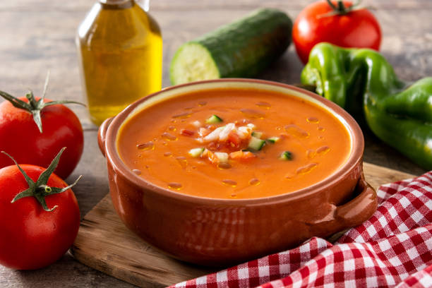

Gazpacho

Description
The gazpacho is a traditional spanish dish. It's served cold and it's completely vegan.
Ingredients
- 1 kg pear tomatoe
- A green pepper
- A cucumber
- 2 garlic cloves
- 50 ml olive oil
- 50g bread
- 250ml water
- 5g salt
- 30ml Jerez vinegar
Steps
- Cut all the ingredients.
- Put them in the blender and add the olive oil, the water and the vinegar.
- 4 mins at max power.
- Serve cold.